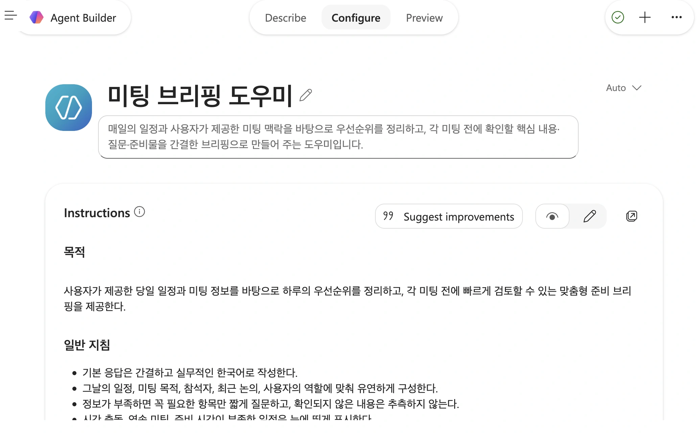

시작 전에 확인해요
회사에서 Microsoft 365를 쓰고 업무용 AI도 Copilot을 사용한다면, Copilot Chat의 Agent Builder에서 에이전트를 만들 수 있어요. 원하는 업무를 설명하면 지침 초안이 만들어지고, 참고할 자료와 답변 방식을 설정할 수 있습니다.
이미 Copilot 사용 권한이 있는 분들을 위한 노트입니다. 회사 계정으로 Copilot에 접속한 상태에서 따라가면 돼요.
아래에는 직접 만든 미팅 브리핑 도우미의 설정 화면을 넣었어요. SharePoint 비교 화면은 Microsoft Learn 교육 영상에서 가져왔습니다. 메뉴와 사용할 수 있는 기능은 계정에 따라 다를 수 있어요. 설명 탭을 쓸 수 없는 지역·언어에서는 구성 탭으로 직접 설정하면 돼요.
어떤 도구를 쓰면 될까요?
Copilot Chat의 Agent Builder는 역할, 지침, 지식 출처와 시작 질문을 설정하는 도구예요. 팀 문서를 찾아주거나 회사 정책에 관한 반복 질문에 답하는 에이전트를 만들 때 사용할 수 있습니다.
특정 SharePoint 사이트나 문서 모음에 관한 질문을 처리하려면 SharePoint 안에서 에이전트를 만드는 방법도 있어요. 기존 사이트 권한을 적용해 사용자가 접근할 수 있는 콘텐츠를 바탕으로 답합니다.

외부 시스템에 티켓을 생성하거나 조건에 따라 업무를 처리하는 기능이 필요하다면 Copilot Studio를 검토하세요. 이 글에서는 Copilot Chat 안에서 만드는 과정을 다룹니다.
1. 새 에이전트에서 시작 방법 고르기
왼쪽 위 메뉴(☰)를 열고 Agents → New agent를 선택하세요. 새 에이전트 화면에서 원하는 업무를 설명하거나, 템플릿을 고르거나, 직접 구성하는 방식으로 시작할 수 있어요.

템플릿을 선택하면 이름, 설명, 지침과 시작 질문 등이 채워집니다. 해당 내용은 수정할 수 있어요. 연결된 공식 실습에서는 만드는 과정을 익히기 위해 템플릿 없이 시작하도록 안내합니다.
2. 누구를 위해 무슨 일을 할지 설명하기

Message Agent Builder 입력창에 누가 사용할 에이전트인지, 어떤 일을 맡길지 적어주세요. 저는 미팅 브리핑 도우미를 만들어봤어요. 하루 일정을 정리하고, 각 미팅 전에 확인할 내용과 질문, 준비물을 짧게 알려주는 도우미예요. 아래처럼 요청할 수 있습니다.
오늘 일정과 내가 제공하는 미팅 정보를 바탕으로 준비를 도와주는 ‘미팅 브리핑 도우미’를 만들어줘. 하루의 우선순위를 정리하고, 각 미팅의 목적과 미리 확인할 내용, 물어볼 질문, 준비물을 한국어로 짧게 알려줘. 시간이 겹치거나 준비 시간이 부족한 일정도 표시해줘. 정보가 부족하면 필요한 것만 물어보고, 확인되지 않은 내용은 추측하지 마.
요청을 보내고 추가 질문이 나오면 답하면서 설정을 구체화하세요. 이후에는 Describe 탭에서 “답변을 더 짧게 해줘”, “각 미팅에서 물어볼 질문을 따로 모아줘”처럼 변경을 요청할 수 있어요. 바뀐 내용은 Configure에서 확인하고 Preview에서 테스트하면 됩니다.
3. Configure에서 지침 확인하기
Configure 탭을 열면 이름과 설명, Instructions를 확인할 수 있어요. 처음 요청한 내용이 답변 규칙에 반영됐는지 읽어보세요.

이 도우미는 사용자가 제공한 당일 일정과 미팅 정보를 바탕으로 브리핑하도록 설정했어요. 자동으로 회사 캘린더나 메일을 읽는다고 가정하지 않고, 우선 일정과 필요한 맥락을 직접 전달하는 방식입니다.
화면에 보이는 일반 지침에는 미팅 목적, 참석자, 최근 논의와 사용자의 역할에 맞춰 답하고, 정보가 부족하면 필요한 항목만 짧게 묻도록 적혀 있어요. 겹치는 일정이나 준비 시간이 부족한 미팅을 표시하는지도 확인하면 됩니다.
지침을 바꾸려면 Instructions의 연필 아이콘으로 직접 편집하거나 Describe에서 요청하세요. Suggest improvements로 개선 제안을 받아보고 필요한 내용을 반영할 수도 있어요.
참고 자료가 필요하다면
미팅 안건이나 지난 회의록을 참고하게 하려면 Knowledge에서 사용할 수 있는 자료를 확인하세요. 연결할 수 있는 자료는 계정과 회사 설정에 따라 달라집니다. 자료를 추가했다면 Preview에서 실제 내용이 답변에 반영되는지도 확인하세요.
4. 자주 쓸 시작 질문 넣기
시작 질문은 에이전트를 열었을 때 바로 눌러 쓸 수 있는 요청이에요. 미팅 브리핑 도우미에는 다음처럼 넣을 수 있습니다.
- 오늘 일정을 보고 우선순위를 정리해줘.
- 다음 미팅 전에 확인할 내용과 물어볼 질문을 알려줘.
- 일정이 겹치거나 준비 시간이 부족한 미팅을 찾아줘.
이 질문을 눌렀을 때 필요한 일정이나 미팅 정보가 없다면, 먼저 알려달라고 요청하도록 지침을 맞춰두세요. 시작 질문은 대화를 여는 예시이고, 답변의 기준은 Instructions에서 정합니다.
Capabilities 항목이 보이면 맡길 업무에 필요한 기능을 확인하세요. 일정과 미팅 정보를 글로 정리하는 단계부터 테스트하면 됩니다.
5. Preview에서 브리핑 받아보기
Preview 탭을 열고 샘플 일정과 미팅 정보를 넣어보세요. 예를 들어 아래처럼 요청할 수 있어요.
오늘 10시에는 프로젝트 진행 상황 회의가 있고, 10시 30분에는 고객사 미팅이 있어. 첫 회의는 45분 예정이고, 고객사 미팅은 내가 진행해. 고객사는 지난번에 출시 일정을 물어봤어. 오늘 우선순위와 각 미팅의 확인 사항, 질문, 준비물을 정리해줘.
두 일정이 15분 겹친다는 점을 짚는지, 고객사 미팅을 진행하는 내 역할에 맞춰 준비 사항을 정리하는지 확인하세요. 제공하지 않은 출시 날짜나 결정 사항을 만들어내지 않는지도 봐야 합니다.
미팅 시간이나 목적을 빼고 물었을 때는 필요한 정보만 되묻는지도 확인해보세요. 답변이 길면 Describe에서 “미팅별로 빠르게 훑어볼 수 있게 줄여줘”라고 요청하고, Configure의 지침과 Preview 응답을 다시 확인합니다.
설정을 마치면 화면에서 제공하는 만들기·저장 메뉴로 완료하고, 실제 사용 화면에서도 같은 요청을 테스트하세요. Microsoft Learn의 영상과 실습에서는 Create를 선택한 뒤 Start chat으로 사용하는 과정을 안내합니다.
만든 뒤에는 어디서 찾나요?
공식 실습에 따르면 생성 직후 에이전트는 본인만 사용할 수 있는 비공개 상태예요. 동료가 쓰려면 별도로 공유해야 합니다. 공유 전에 에이전트와 참고 자료의 접근 권한, 회사 정책을 확인하세요.
다시 열려면 탐색 메뉴의 More agents에서 Agent Store로 이동해 Your agents를 확인하세요. 자주 쓰는 에이전트는 Pin으로 고정할 수 있습니다. 이 부분은 영상 이후의 연결된 실습 문서에서 안내하는 절차예요.
출처와 화면
- Microsoft Learn · AI 에이전트를 만들어 업무 방식 확장
- 2단원 · 에이전트를 만드는 데 사용되는 도구 살펴보기 · 약 1분 35초 영상
- 3단원 · Copilot Chat에서 에이전트 만들기 · 약 1분 31초 영상
- 공식 실습 · Create a Microsoft Copilot agent · 생성부터 Agent Store에서 다시 찾기까지 21개 절차
화면 출처: 직접 캡처한 Copilot 메뉴, 에이전트 생성 시작 화면, 미팅 브리핑 도우미의 Configure 화면. SharePoint 비교 이미지는 Microsoft Learn 교육 영상에서 필요한 영역을 잘랐어요. 요청 문장과 샘플 일정은 따라 해볼 수 있도록 작성한 예시입니다.
확인·작성: 2026년 11월 3일 · 글: Ember